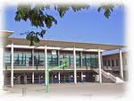

ACCUEIL
PORJECT
EXPERIENCE
SERVICE
MON EQUIPE
CONTACT
MON CURSUS :
Apres L'école primaire Lurian 1 à salon de provence puis je suis arriver au college Jean Bernard à Salon de provence.
J'ai un trés bon dossier de collège j'ai eu les filicitation a chaque trimestre de 6ème, 5ème, 4ème .
J'ai commencé à aimer l'informatique quand je commencé le project iter robot si dessous mais j'ai vraiment
commencer à programmé avec de vrai langage et plus des block au lycée

Apres L'école primaire Lurian 1 à salon de provence puis je suis arriver au college Jean Bernard à Salon de provence.
J'ai un trés bon dossier de collège j'ai eu les filicitation a chaque trimestre de 6ème, 5ème, 4ème .
J'ai commencé à aimer l'informatique quand je commencé le project iter robot si dessous mais j'ai vraiment
commencer à programmé avec de vrai langage et plus des block au lycée
Apres Le college je suis rentré au lycée adam de crappone à salon de provence en seconde option SI
puis apres je suis rentré en première Maths Ph CH Si mais j'ai finalement redoubler en premiere Maths PH CH NSI
Pour avoir enfin cette voie qui me conviens le plus étant mordu de programmmation depuis plus de 4 ans
commencer à programmé avec de vrai langage et plus des block au lycée